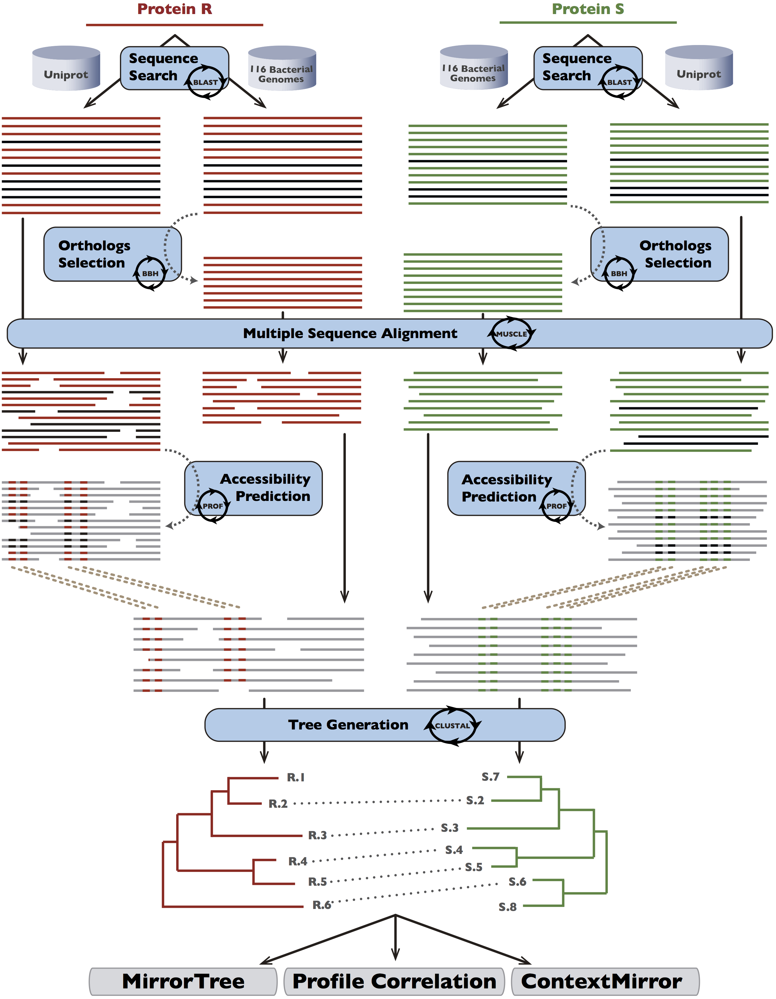

Incorporating information on predicted solvent accessibility to the co-evolution-based study of protein interactions
The mirrortree and related methodologies have been widely used to infer protein-protein interactions and other functional relationships from phyogenetic trees. These methods, assume that related proteins evolve in a coordinated fashion printing this signal in the topology and distances of their phylogenetic trees. Although some authors revealed how do the residue filtering based on structural features can help the global performance, the applicability of these techniques to genome-wide analysis is not feasible due to the lack of experimental 3D structures.
To address these limitations, we benchmarked the impact of restricting mirrortree-like analysis to the residues predicted as accessible. In order to do that, we predicted solvent accessibility for each E. coli protein using multiple sequence aligments containing other homolog sequences. This information was then considered to filter the alignments of orthologs used to build the trees (See Figure). The filtering was based on different criteria trying to enrich the alignments in exposed residues that could be candidate of playing relevant roles in interaction. The global performance of this sets was evaluated using 3 different methods: MirrorTree (MT), Profile Correlation (PC) and ContextMirror (CM); and 3 different kind of interactions: binary physical, co-presence in macromolecular complexes and co-membership in the same metabolic pathway.
We found that the performance of the context-based methodologies (PC and CM) is increased when we use predicted accessibility in detecting binary physical interactions. Moreover, the methods showed better performance if the multiple sequence aligments necessary to predict accessibility are created for this purpose, instead of that based in orthologs only. Examples illustrating the effect of incorporating predicted accessibility are present in the paper.
The general conclusion is that the predicted accessitility only helps prediction of protein interacion under some circumstances. The accurate context-based methods predicting binary physical interactions is the ideal case to think about excluding not-accessible predicted regions. That improvement comes at no cost in terms of applicability since accessibility can be predicted for any sequence.
More information and links
© 2012, Computational Systems Biology Group. CNB-CSIC